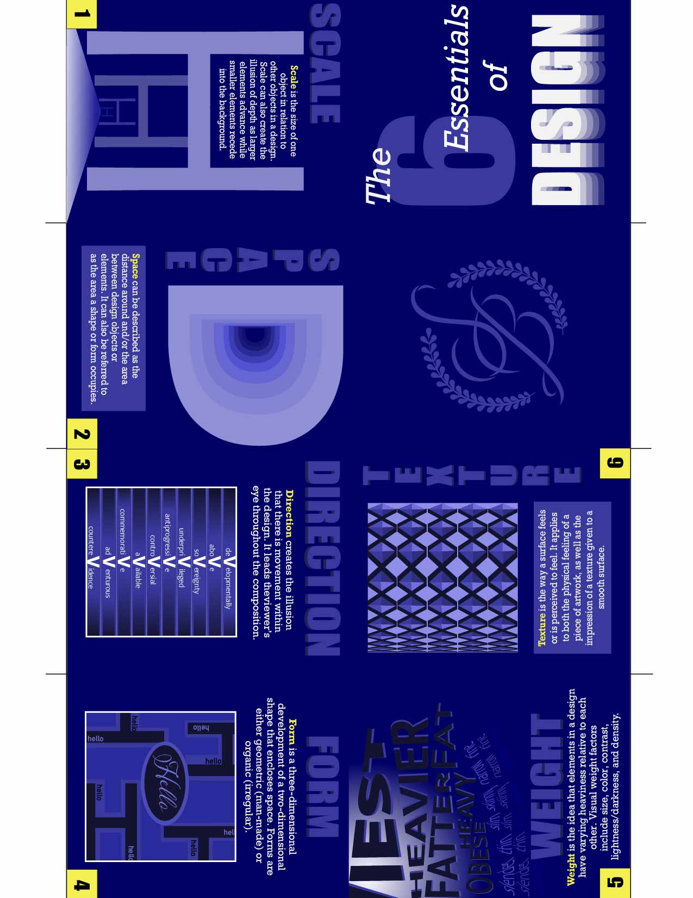
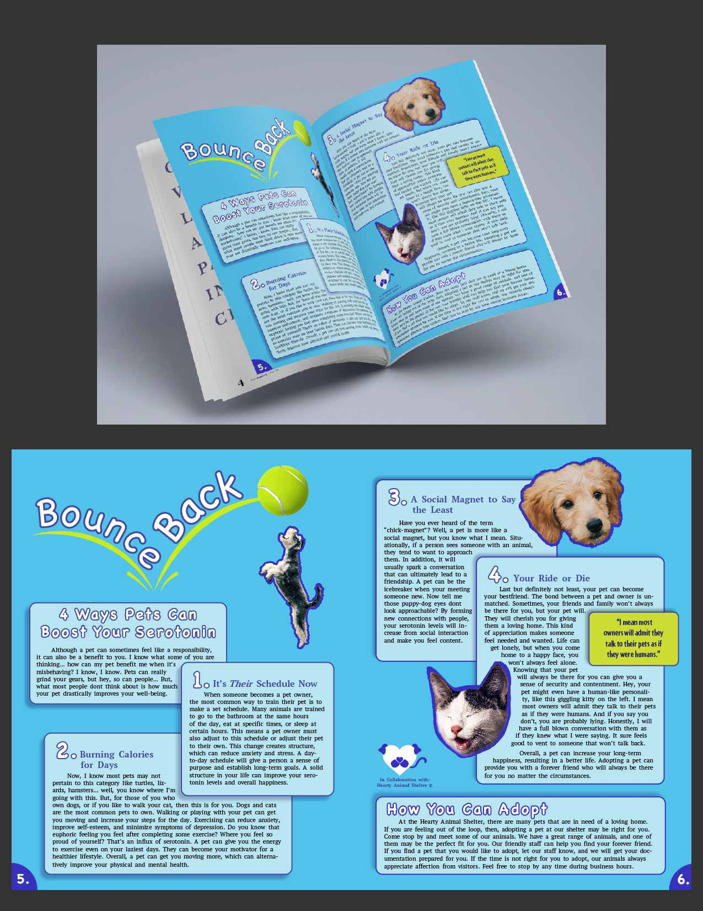
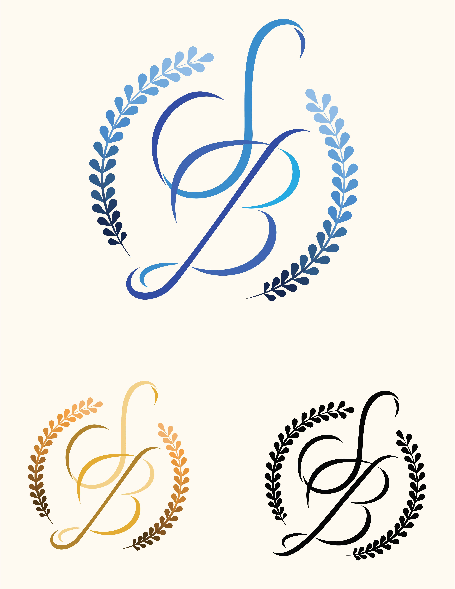
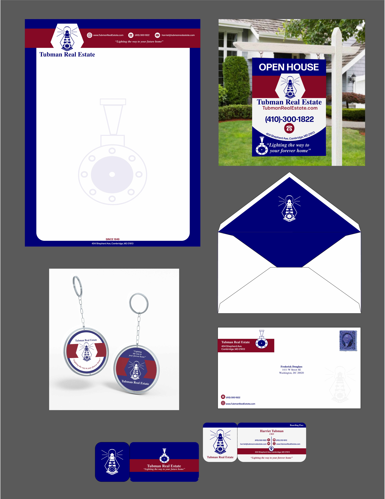
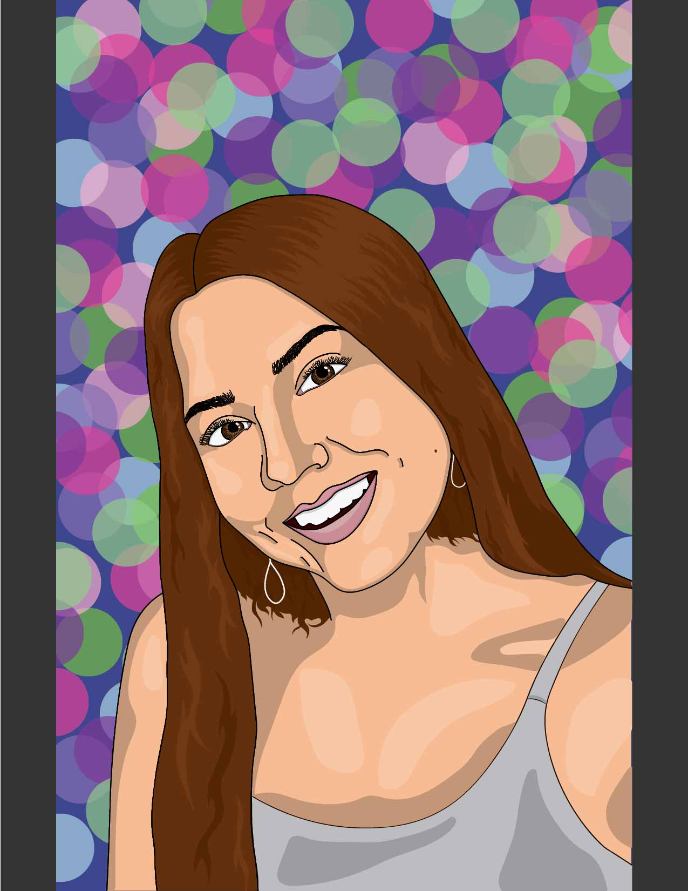

Shanna Baudier
Graphic Designer
About
My Work
All Work
Photography
Digital
Studio Art
Contact Me
Digital Work
This project was for my Color Design class, where we were told to visually display a specific location and its colors according to the season.

This brochure was a project for my Graphic Abstraction class. We were told to use the visuals from our previous projects and create an informative brochure by combining our visuals and text definitions.
This project was for my Color Design class, where we were given a list of artists and their most popular tours to choose from. We were then told to create a poster for their tour (including date,location,etc.) and display it in the 6 different color schemes (starting with one main color).

This project was for my Graphic Design I class. We were told to go on a 90-min walk during class and to "experience an event". We then had to make a visual campaign/display of what we experienced. In my case, I got to play with someone's puppy on my walk. I created a magazine to visually convince people to want to adopt.
This is the other part of my Graphic Design I project. I also created a poster to visually convince the audience to want to adopt a pet from my made-up animal shelter. On the poster, I lead my concepts with visuals, rather than typography.
This project was for my Graphic Design I class. We were told to choose an object and expand on the meaning/concepts relating to it to create a set of stamps. I started with the idea of the many food items potatoes are made into. I then expanded to the many root vegtables. I combined both concepts in creating root vegetables as the different unhealthy foods created from potatoes. I used logos to visually represent the company/food item, but left out the actual name of company to display how visuals can help you percieve something without words.
This was the second part of my stamp project for my Graphic Design I class. We had to make a trademark stamp for our envelope, so I chose to display a farmer and used Idaho to also pertain to the potato theme. We had to make sure our stamps were visually appealing as big stamps, yet also next to each other on an envelope.

This project was for my Typography class, where we were assigned to create a logo for ourselves or someone else using 2-3 letters. I chose to make a logo for my self and my initials. I wanted it to be formal, yet have a lighthearted feel. This is the logo I came up with, which is also the logo I now use for my branding.

This project was for my Graphic Design I class, where we were given a list of historical figures. We then had to create a business stationary mockup including a business card, envelope, letterhead, and 2 other items that would help brand the business you created. I chose Harriet Tubman and chose to have her own a real estate business.
This project was for my Typography class, where we were given a list of malaphors to choose from. We had to alter our typography to visually display the malaphor we chose.
This project was for my Typography class, where we were assigned to create a magazine spread on a topic of our choice. I chose to do an article on makeup, specifically eyeliner.

This project was for my Digital Art class, where we were assigned to create a self portrait of ourselves digitally.